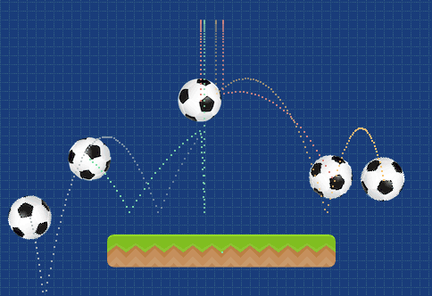

Pilas Engine пропонує кілька способів для багаторазового виконання функцій. Це корисно для створення ворогів, створення годинників, загалом, щоб зробити гру складнішою і цікавішою.
Є дві основні функції таймера:
pilas.luego(кількість_секунд_чекати, функція)pilas.cada(через_скільки_секунд, функція, повторити_разів: необов'язковий параметр)Перша функція таймеру дозволяє виконати вказану функцію через певний період часу. Наприклад, якщо ми хочемо змусити актора сказати щось через 3 секунди після того, як він буде розміщений на екрані, ми можемо зробити це, написавши цю функцію таймеру у методі iniciar такого актора:
Зверніть увагу, що функція, яка записується другим аргументом, буде виконана лише один раз.
Друга функція таймеру, pilas.cada, дозволяє викликати кілька разів зазначену функцію у другому аргументі щоразу через певну кількість секунд.
Наприклад, уявіть, що ми хочемо створювати акторів pelota (м'ячі) кожні півсекунди. Для цього ми можемо написати щось подібне:
pilas.cada(0.5, () => {
var pelota = pilas.actores.pelota();
pelota.y = 100;
pelota.x = pilas.azar(-200, 200);
});Якщо ви виконаєте ці інструкції, кожні півсекунди буде створюватися м'яч щоразу в іншій позиції:

Якщо ви використовуєте функцію pilas.cada, щоб повторити дію кілька разів, ймовірно, що за певної умови потрібно припинити повторення виконання функції, вказаної другим аргументом.
Один із способів досягти цього - зазначити, скільки разів повторювати функцію у другому аргументі. Наприклад, викличемо функцію у другому аргументі 5 разів кожні дві секунди:
Інший варіант - зупинити таймер безпосередньо з функції, повернувши true.
Наприклад, уявіть, що у вас є актор, який пересувається на 50 пікселів праворуч кожні 2 секунди, але ви хочете, щоб він припинив рух, коли він досягне позиції x, що дорівнює 200. Ви можете реалізувати це так:
var actor = pilas.actores.aceituna();
pilas.cada(2, () => {
actor.x += 50;
if (actor.x > 200) {
// якщо повернути значення 'true',
// функція припиняє викликатися кожен раз
// щодві секунди
return true;
}
});Також існує метод під назвою cada_segundo, який актори можуть використовувати для запуску дії щоразу, коли минає секунда гри. Наприклад, якщо ми хочемо створити актора, який щосекунди збільшує свій розмір, ми можемо визначити метод таким чином:
Або, якщо ми вже маємо покликання на актора, також було б правильно написати щось подібне: